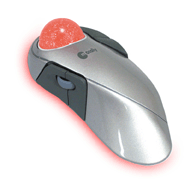

หน่วยรับข้อมูล
เป็นอุปกรณ์รับเข้าทำหน้าที่รับโปรแกรมและข้อมูลเข้าสู่เครื่องคอมพิวเตอร์ อุปกรณ์รับเข้าที่ใช้กันเป็นส่วนใหญ่คือ แผงแป้นอักขระ (keyboard) และเมาส์ (mouse)
นอกจากนี้ เช่น VDO camera,Scanner,Microphone ,Trackball ,Joystickเป็นต้น
